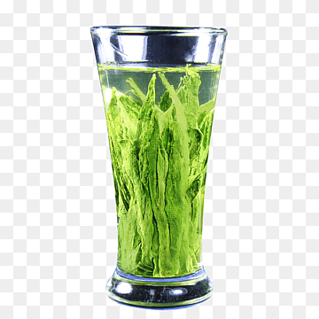
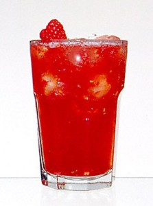
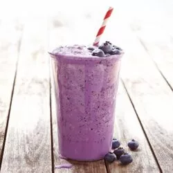
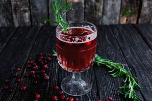

 Этот напиток содержит огромное количество витаминов и минералов и приносит пользу для здоровья благодарая составу: зеленый чай, цветки ромашки и корень имбиря.
Охлажденный малиновый сироп
 Сочетая в себе малиновый сок и лимонное сорго, цедру цитрусовых и плоды шиповника, этот прохладительный напиток освежит и прояснит ваш разум.
Чудо-напиток из голубики
 Экстракты голубики и вишни, добавленные в травяной чай из бузины, сразу же приведут вас в состояние покоя и блаженства
Клюквенный антиоксидантный взрыв
 Зарядитесь энергией богатого витамином C напитка со вкусом клюквы и гибикуса
Назад в гостевую